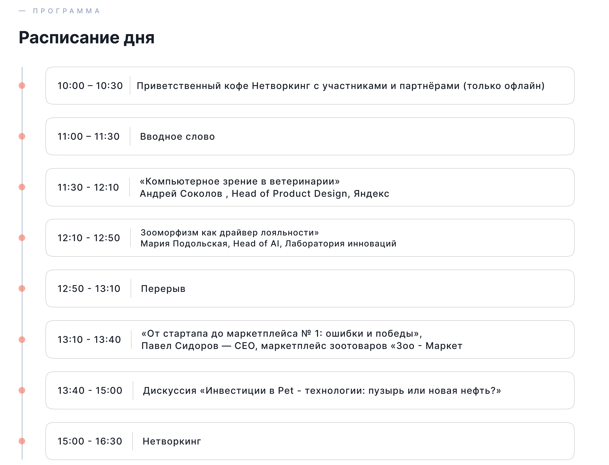
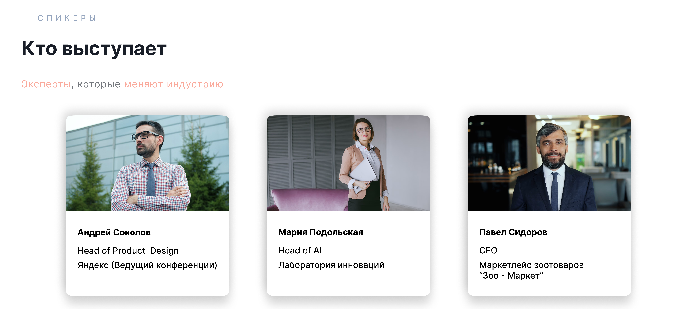
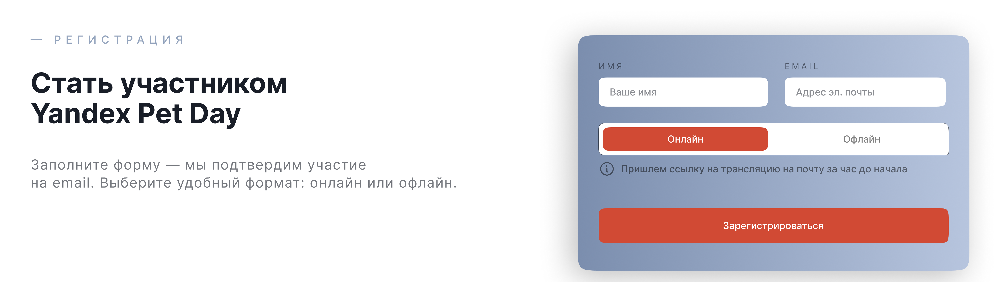
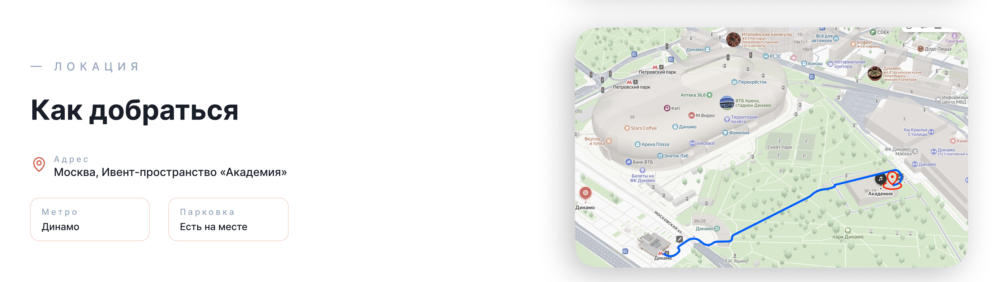
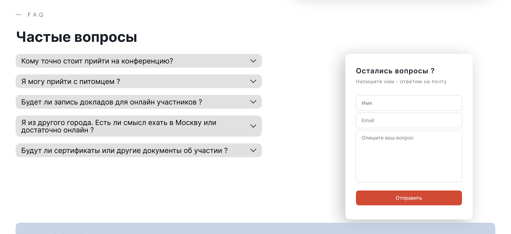

09 / UX/UI · ЛЕНДИНГ СОБЫТИЯ
Яндекс
Pet Day.
Лендинг гибридной конференции о цифровых продуктах для питомцев и их владельцев. Дизайнеры, продуктовые команды и специалисты по технологиям могут оценить программу и выбрать, как участвовать.
- Роль
- UX/UI-дизайн
- Вклад
- Структура, визуальная концепция и сценарий регистрации


Задача
Помочь участнику решить, стоит ли идти.
Первый визит начинается с трёх вопросов: подходит ли мне тема, какие выступления я смогу посетить и как зарегистрироваться. Ответы должны находиться в том порядке, в котором возникает решение об участии.
Разбор сценария
От первого интереса до участия.
При разборе макета путь участника был разложен на четыре решения. Для каждого определён вопрос, на который должен ответить интерфейс.
Понять тему
О чём конференция?
Первый экран знакомит с темой, показывает ключевые сведения о событии и ведёт к регистрации.
Выбрать выступления
Что интересно и как спланировать день?
В расписании выделены время и тема. Отдельные карточки спикеров раскрывают, кто выступает и какую роль занимает.
Определить формат
Буду на площадке или подключусь онлайн?
Форма принимает имя и email. Формат выбирается рядом с полями, а подсказка показывает, что будет дальше.
Подготовиться
Где трансляция или как найти площадку?
Для онлайн-участника предусмотрена ссылка в письме. Для визита в макете выделены адрес, метро, парковка и карта. Остальные вопросы собраны в FAQ.
Главное действие в первом экране
В разборе первой версии отмечалось, что кнопка «Участвовать» сливалась с фоном. В итоговом макете её увеличили и выделили красным. Этот цвет повторяется у отправки формы и выбранного формата.
Формат влияет на маршрут
Кофе и знакомство в начале программы помечены как офлайн. Для трансляции важно отдельно показать доступные сессии, а для визита — как добраться. Эти сведения помогают выбрать формат до ввода контактов.
Итоговый дизайн
Расписание, лица и решение об участии.
Макет ведёт от знакомства с конференцией к программе, спикерам и регистрации. Время и названия докладов удобно сравнить в расписании, а карточки спикеров дают контекст для выбора.




Акценты по назначению
Красный выделяет действие и выбранный формат. Холодный голубой объединяет информационные элементы, а тёмный текст помогает быстро просмотреть программу.
Регистрация
Одна форма, два способа участия.






Результат
Возможность выбрать до регистрации.
В итоговом макете собран полный путь посетителя. Он может оценить актуальность программы, выбрать формат и узнать, где искать организационные детали после регистрации.
Перед публикацией
В предоставленном макете год в анонсе отличается от даты в карточке события. В карточке также указана только трансляция, хотя форма предлагает онлайн и офлайн. Перед публикацией нужно согласовать дату и показать оба формата уже на первом экране.
Проверка сценария
В тесте прототипа стоит попросить участника найти подходящий доклад, выбрать формат и объяснить, что произойдёт после регистрации. После запуска можно отдельно измерять открытия формы и подтверждённые регистрации по каждому формату.